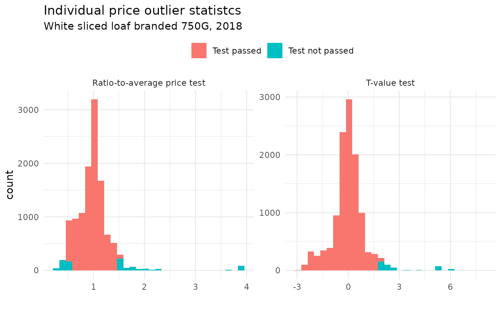
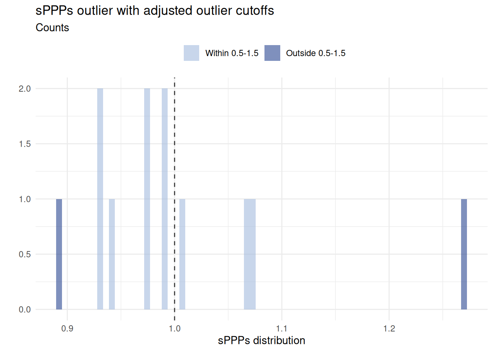
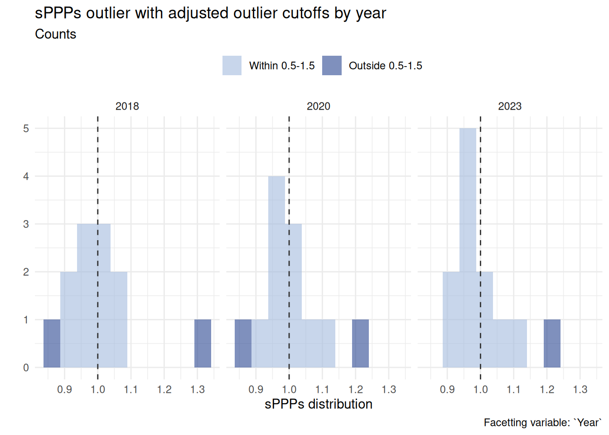
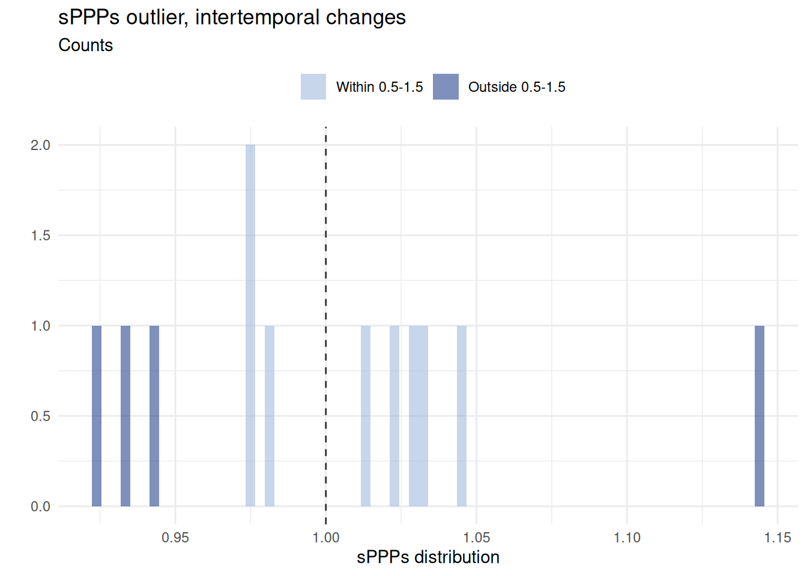

Overview
Data validation is carried out to confirm the validity of price statistics at various levels of aggregation, from the initial item-level price quotes to the basic heading level and upwards, as well as comparing household expenditure weights across regions. The process aligns with current recommendations; see ICP (2021), World Bank (2013) and European Union/OECD (2024) for more information.
The validation steps are:
- Intra-regional validation analyses individual and aggregate price quotes within the same region and across regions of the same country
- Inter-regional validation performs prices validation across all regions and countries, ensuring that average prices are based on comparable products in regions across countries and that products have been accurately priced.
- Validation of alternative data sources describes the validation process of alternative data sources
- Validation at basic-heading level covers the validation of price indices at the basing-heading level
- Expenditure weights validation describes the validation of household consumption expenditure
- Validation beyond basic-heading level concerns the validation of price indices beyond the basing-heading level
Data used in this vignette is taken from official UK microdata from the United Kingdom Office for National Statistics (ONS). Similar data was recently used in Hearne and Bailey (2025) and is publicly available:
-
uk_cpi()is a snipped of the UK CPI microdata and contains price quotes for two products: White sliced loaf branded 750 grams (COICOP 01.1.1.3) and carpenter hourly rate (COICOP 04.3.2.5).
| Date of quote | Reference quantity | Unit of reference quantity | Region | Shop identifier | Type of shop | Quantity observed | Unit of observed quantity | Price observed | Reference quantity price |
|---|---|---|---|---|---|---|---|---|---|
| 2018 - 01.1.1.3 - 210111 - WHITE SLICED LOAF BRANDED 750G | |||||||||
| 201801 | 750 | 1 | South East | 1 | Multiple | 750 | 1 | 1.00 | 1.00 |
| 201801 | 750 | 1 | South East | 1 | Multiple | 750 | 1 | 1.00 | 1.00 |
| 201801 | 750 | 1 | North West | 1 | Multiple | 750 | 1 | 1.45 | 1.45 |
-
uk_hhe()is a snipped of the - Regional household final consumption expenditure and contains regional household expenditure shares for the same two products: White sliced loaf branded 750 grams (COICOP 1010103) and carpenter hourly rate (COICOP 410518).1
1 Intra-regional validation
Intra-region validation establishes that price collectors within the same region and across regions of the same country have priced products that match the product specifications and that the prices they have reported are correct. This is done in two stages, which correspond to the outlier detection of (a) individual prices and (b) average price aggregates.
1.1 Individual price outlier statistics
For each product, a Price Observation Table is obtained, containing a characterisation of the individual product as well as two individual price outlier statistics, the ratio-to-average price test and the t-value test; see World Bank (2013), table 9.1a for an extensive example.
Ratio-to-average price test: The ratio of an individual price observation \(i\), \(P_{i}\), of a specific product \(j\) and the observed average price for the product, \(\mu_j\). An observed price passes the this test if the ratio is between 0.5 and 1.5. This simple check flags potential outlier values values without relying on standard deviation, which can itself be distorted by outliers (World Bank 2013, 251).
\[ ratio-to-average = p_{ij}/\mu_j \]
T-value test: The ratio of the deviation of an individual price observation from the average reference quantity price for the product and the standard deviation of the product. To pass the test, the ratio must be 2.0 or less in absolute terms; any value greater than 2.0 is suspect because it falls outside the 95 percent confidence interval.
\[ t-val = (p_{ij} - \mu_{P_j}) / \sigma_{P_j} \]
Individual price quotes that do not pass these tests are flagged in the Price Observation Table. The price observation table is generated with the function valid_pot().
Example using UK CPI microdata
# Price Observation Table ---------
uk_pot <- uk_cpi |>
select(Year, `Product code`, , `Product description`, `Reference quantity price`) |>
group_by(Year, `Product code`, `Product description`) |>
valid_pot(price_quote = "Reference quantity price") |>
ungroup()
head(uk_pot, n = 3) |>
gt() |>
tab_header(
title = md("**Price Observation Table**"),
subtitle = md("Example for `item_id` = 210111")
) |>
fmt_number(
columns = c(
`Ratio-to-average price test`,
`T-value test`
),
decimals = 2
)| Price Observation Table | |||||||
Example for item_id = 210111 |
|||||||
| Year | Product code | Product description | Reference quantity price | Ratio-to-average price test | T-value test | Ratio-to-average price test FLAG | T-value test FLAG |
|---|---|---|---|---|---|---|---|
| 2018 | 210111 | WHITE SLICED LOAF BRANDED 750G | 1.00 | 0.96 | −0.21 | FALSE | FALSE |
| 2018 | 210111 | WHITE SLICED LOAF BRANDED 750G | 1.00 | 0.96 | −0.21 | FALSE | FALSE |
| 2018 | 210111 | WHITE SLICED LOAF BRANDED 750G | 1.45 | 1.39 | 1.83 | FALSE | FALSE |
# Visualisation of price distribution ---------
uk_pot |>
select(
`Product code`,
`Ratio-to-average price test`:`T-value test`
) |>
pivot_longer(`Ratio-to-average price test`:`T-value test`) |>
mutate(
is.outlier = case_when(name == "Ratio-to-average price test" & (value < 0.5 | value > 1.5) ~ "Test not passed",
name == "T-value test" & ((value > 2) | (value < -2)) ~ "Test not passed",
.default = "Test passed"
),
is.outlier = factor(is.outlier, levels = c("Test passed", "Test not passed"))
) |>
ggplot(aes(x = value, fill = is.outlier)) +
facet_wrap(~name, scales = "free") +
geom_histogram(bins = 30) +
labs(
title = "Individual price outlier statistcs",
subtitle = "White sliced loaf branded 750G, 2018",
x = "",
fill = ""
) +
theme_minimal() +
theme(legend.position = "top") +
scale_fill_manual(values = c("#a3bbdd", "#2a4691"))
1.2 Aggregate price statistics
This stage involves identifying extreme values among the average prices of the products listed in the Average Price Table. An extreme value is defined as an individual price or average price that for a given test scores a value that falls outside a predetermined critical value and is build on two average price outlier statistics, which are summarised in the Average Price table; see World Bank (2013), table 9.2a and 9.2b for an extensive example. The two statistics contained in this table are the max-min ratio test and the coefficient to variation test.
Max-min ratio test: The ratio between the maximal and minimal observed price for product \(j\). Products where the maximal observed price is more than twice as big as the minimum are flagged
\[ max-min~ratio = max(p_j)/min(p_j) \]
Coefficient-of-variation test: The standard deviation for the product expressed as a percentage of the average price for the product. Products with a coefficient of variation greater than 20% will be flagged.
\[ coefficient-of-variation: \sigma_{p_j} / \mu_{p_j} \]
Aggregate price quotes that do not pass these tests are flagged in the Average Price Table. The price observation table is generated with the function valid_apt().
Example using UK CPI microdata
# Average Price Table -------
uk_apt <- uk_cpi |>
select(
Year, Region,
`Product code`, `Reference quantity price`
) |>
group_by(Year, Region, `Product code`) |>
valid_apt(value = "Reference quantity price")
head(uk_apt, 2) |>
gt() |>
tab_header(
title = md("**Average Price Table**"),
subtitle = md("Example for `item_id`s = 210111 & 410518, **pre-cleaning**")
) |>
fmt_number(
columns = -c(Year, `Product code`),
decimals = 2
)| Average Price Table | |||||||||
Example for item_ids = 210111 & 410518, pre-cleaning
|
|||||||||
| Product code | Number of observations | Average price of product | Maximum price of product | Minimum price of product | Standard deviation | Max-min ratio | Coefficient of variation | Max-min ratio FLAG | Coefficient of variation FLAG |
|---|---|---|---|---|---|---|---|---|---|
| 2018 - East Midlands | |||||||||
| 210111 | 258.00 | 1.08 | 1.30 | 0.99 | 0.08 | 1.31 | 0.07 | FALSE | FALSE |
| 410518 | 192.00 | 20.29 | 33.60 | 8.00 | 7.81 | 4.20 | 0.39 | TRUE | TRUE |
1.3 Linking validation pipelines for intra-regional validation
The extent of validation required depends on the quality of the underlying microdata. When working with unconsolidated or raw data, more extensive revisions may be necessary.
Using the two functions valid_pot(), and valid_apt() a simple production pipeline can be set up which operates conditional on the flags of the different tests.
Example using UK CPI microdata
# Example for linked production pipeline -------
uk_irv <- uk_cpi |>
select(
Year, Region,
`Product code`, , `Product description`,
`Reference quantity price`
) |>
group_by(Year, Region, `Product code`, `Product description`) |>
# Apply individual price outlier check
valid_pot() |>
# Condition on price quotes which pass the Price Observation Table tests
filter(!`Ratio-to-average price test FLAG` & !`T-value test FLAG`) |>
# Remove bimodal distribution
filter(`Ratio-to-average price test` > 0.8) |>
# Apply Average Price Table checks
valid_apt()
head(uk_irv, 4) |>
group_by(Year, `Product code`, `Product description`) |>
gt() |>
tab_header(
title = md("**Average Price Table**"),
subtitle = md("Example for `item_id`s = 210111 & 410518, **post-cleaning**")
) |>
fmt_number(
columns = -c(Year, `Product code`),
decimals = 1
)| Average Price Table | |||||||||
Example for item_ids = 210111 & 410518, post-cleaning
|
|||||||||
| Region | Number of observations | Average price of product | Maximum price of product | Minimum price of product | Standard deviation | Max-min ratio | Coefficient of variation | Max-min ratio FLAG | Coefficient of variation FLAG |
|---|---|---|---|---|---|---|---|---|---|
| 2018 - 210111 - WHITE SLICED LOAF BRANDED 750G | |||||||||
| East Midlands | 228.0 | 1.1 | 1.1 | 1.0 | 0.0 | 1.2 | 0.0 | FALSE | FALSE |
| East of England | 276.0 | 1.2 | 1.5 | 0.9 | 0.2 | 1.6 | 0.2 | FALSE | FALSE |
| 2018 - 410518 - CARPENTER HOURLY RATE | |||||||||
| East Midlands | 96.0 | 22.8 | 28.2 | 18.1 | 4.0 | 1.6 | 0.2 | FALSE | FALSE |
| East of England | 168.0 | 22.3 | 27.0 | 20.0 | 1.9 | 1.4 | 0.1 | FALSE | FALSE |
2 Inter-regional validation
Inter-regional validation involves verifying prices across all regions and countries to ensure that average prices are derived from comparable products and that these products have been accurately priced.
The objective is to confirm that the average prices reflect genuine comparability of products across countries and regions, and that pricing accuracy has been maintained.
This is achieved by comparing the average prices of identical products across multiple countries and identifying extreme values using the cross-country standardised price ratio (SPR).
For product \(1\) and country–region \(A\), the SPR is defined as:
\[ SPR_{1A} = \mu^*_{1A} / \left( \prod_{n = A,\dots, N} \mu^*_{1n} \right)^{\frac{1}{N}} \times 100, \]
where \(\mu^*_{1A}\) represents the average converted price of product \(1\) in country–region \(A\), and \(N\) is the total number of country–regions. Two conversions are applied to make country–region prices comparable across countries: exchange rates and purchasing power parities (PPPs) (World Bank 2013, 258):
- SPRs derived from exchange rate–converted prices are referred to as XR-ratios.
- SPRs based on PPP-converted prices are referred to as PPP-ratios.
Both types of SPRs are used for validation; however, only PPP-ratios are employed to measure dispersion. XR-ratios are considered more reliable during the initial stage of cross-country validation. XR- and PPP-ratios that fall outside the 80–125 range are flagged as extreme values requiring verification.
2.1 The XR-ratio
The function valid_ratio_xr() computes the XR-ratio table, where a country–region’s XR price for a given product is divided by the geometric mean of that product’s price; see Table 9.3a in (World Bank 2013, 257).
In the resulting table, the degree of variability can be examined to identify products and country–region combinations with the highest XR ratios, that is, those showing the greatest variation across countries.
Example using CPI microdata
🚧 Mock-up code only as comprehensive list of average product prices across multiple countries is currently not available.
# Build data ----------
## UK data
uk_irv <- uk_irv |>
filter(Year == "2018") |>
ungroup() |>
slice(1, 3) |>
mutate(Region = paste0("UK - ", Region)) |>
select(Region, Year, `Product code`, `Average price of product`) |>
mutate(`XR USD` = 1.25)
## Dummy CZ data
cz_irv <- tibble(
Region = c("CZ01", "CZ02"),
Year = "2018",
`Product code` = 210111,
`Average price of product` = c(4.22, 3.88),
`XR USD` = .4
)
## Dummy DE data
de_irv <- tibble(
Region = c("DE01", "DE02"),
Year = "2018",
`Product code` = 210111,
`Average price of product` = c(1.44, 1.23),
`XR USD` = 0.9
)
## Combine data
df_xr <- rbind(uk_irv, cz_irv, de_irv)
df_xrr <- df_xr |>
group_by(Year, `Product code`) |>
valid_ratio_xr(
average_price = "Average price of product",
exchange_rate = "XR USD"
)
df_xrr |>
gt() |>
tab_header(
title = md("**XR-ratio Table**"),
subtitle = md("Example for two items, **DE, UK, CZ**")
) |>
fmt_number(
columns = -c(Year, `Product code`),
decimals = 1
)| XR-ratio Table | |||
| Example for two items, DE, UK, CZ | |||
| Region | Average price of product | XR USD | XR-ratio |
|---|---|---|---|
| 2018 - 210111 | |||
| UK - East Midlands | 1.1 | 1.2 | 94.3 |
| UK - East of England | 1.2 | 1.2 | 107.4 |
| CZ01 | 4.2 | 0.4 | 120.8 |
| CZ02 | 3.9 | 0.4 | 111.1 |
| DE01 | 1.4 | 0.9 | 92.8 |
| DE02 | 1.2 | 0.9 | 79.3 |
2.2 The PPP-ratio
The next stage of data validation employs purchasing power parities (PPPs) to convert national product prices into a common currency, enabling comparison through PPP-ratios.
This procedure is implemented using the valid_ratio_ppp() function, which calculates the PPP-ratio; see Table 9.3b in (World Bank 2013, 258). The coefficient of variation is used to assess variability across products and countries; coefficients exceeding 33% are considered extreme and may indicate the need for further verification of the underlying data.
Within each block, PPP-ratios—computed as the PPP-converted price divided by the geometric mean of the product price—reflect the degree of variability both across country-regions and across products.
The country variation coefficient (row measure) represents the standard deviation of product PPPs within country-regions, thereby identifying countries exhibiting the greatest price variability. Conversely, the product variation coefficient (column measure) represents the standard deviation of PPP-ratios across country-regions, highlighting products with the most significant cross-country variation.
Example using CPI microdata
🚧 Mock-up code only as comprehensive list of average product prices across multiple countries is currently not available.
# Random data
set.seed(123)
df_xr2 <- rbind(
df_xr,
df_xr |> mutate(
`Product code` = `Product code` + 10,
`Average price of product` = `Average price of product` + runif(3, 1, 2)
)
) |>
select(-`XR USD`)
# Calculations
df_out <- df_xr2 |>
valid_ratio_ppp(
year = "Year",
product_code = "Product code",
region = "Region",
average_price = "Average price of product"
)
# Final table
df_out |>
gt() |>
tab_header(
title = md("**PPP-ratio Table**"),
subtitle = md("Example for two items, **DE, UK, CZ**")
) |>
fmt_number(
columns = -c(Year, `Product code`),
decimals = 1
) |>
sub_missing(
columns = everything(),
rows = everything(),
missing_text = ""
)| PPP-ratio Table | ||||||||
| Example for two items, DE, UK, CZ | ||||||||
| Year | Product code | UK - East Midlands | UK - East of England | CZ01 | CZ02 | DE01 | DE02 | VC Product |
|---|---|---|---|---|---|---|---|---|
| 2018 | 210111 | 92.5 | 87.4 | 119.4 | 119.5 | 92.1 | 94.1 | 14.6 |
| 2018 | 210121 | 108.1 | 114.4 | 83.8 | 83.7 | 108.6 | 106.2 | 13.5 |
| 2018 | Region variation coefficients | 11.0 | 19.1 | 25.2 | 25.3 | 11.7 | 8.5 | |
3 Validation of alternative data sources
When official data required for the calculation of sPPPs are unavailable, alternative data sources are employed. Examples include historical price quotations obtained from private insurers’ websites and other relevant non-official datasets.
The use of alternative data sources depends on the type and availability of data and may vary across cases and countries. Validation of such sources follows two main steps:
- Plausibility validation
- Statistical validation
Plausibility validation assesses the credibility of the identified data source and the reasonableness of the information it contains. This process involves cross-referencing data with additional alternative or official sources. Once the the numerically most credible source is identified, its plausibility is further verified through expert consultation with project counterparts, researchers, and—most importantly—the national statistical offices (NSOs) of the respective countries. Only data sources deemed credible by experts proceed to the next stage of processing.
Statistical validation encompasses the analytical checks described in this vignette. However, depending on the nature, structure, and completeness of the alternative data source, the extent of statistical validation may be limited—or, in exceptional cases, not feasible. In such instances, greater emphasis is placed on expert-led plausibility validation to ensure the integrity of the data used.
4 Validation at basic-heading level
The validation at the basic-heading level concerns the reliability of the CPD estimates as well as their cross-sectional comparability.
4.1 Dikhanov tables for validation at basic-heading level
Ensures that prices are consistent not only within basic headings but also at the aggregate level across basic headings. This can, for example, help address cross-country measurement inconsistency. This is done using Dikhanov tables (World Bank 2013, 261/267), which consist of:
- Summary information (PPPs, SDs, price level) by region for the aggregate;
- CPD residuals and product variation coefficients for products within basic headings.
The Dikhanov table facilitates the comparisons of PPPs across basic headings; plausible variations in PPPs is expected across regions. Such variations would indicate that, say, alcoholic beverages in region A are x% higher than in region B. The CPD residuals help ensure that the aggregate PPP variations are not driven by certain basic headings, or isolated products therein, but are more reflective of common price-level differences across regions. Extreme values can be identified based on CPD residuals and PPP ratio threshold values described in Table 1; see also (World Bank 2013, 261).
| CPD residuals | PPP-ratios | Flag |
|---|---|---|
| Between −0.25 and 0.25 | Between 78 and 128 | OK |
| Between −0.75 and −0.25 or 0.25 and 0.75 | Between 47 and 78 or 128 and 212 | Flag 1 |
| Between −2.0 and −0.75 or 0.75 and 2.0 | Between 14 and 47 or 212 and 739 | Flag 2 |
| Less than −2.0 or greater than 2.0 | Less than 14 or greater than 739 | Flag 3 |
The exampele below produces a Dikhanov tables with valid_dikhanov() for products with product classification provided by argument product_heading for the two generic products “1” and “3” as specified via argument product_heading_comparison. Note that if product_heading_comparison were to left empty, the default option would produce Dikhanov tables for all three products contained in the provided data frame dt1.
set.seed(123)
R <- 5 # number of regions
B <- 3 # number of product groups
N <- 5 # number of products
dt1 <- pricelevels::rdata(R = R, B = B, N = N)
valid_dikhanov(
data = dt1,
region = "region",
product = "product",
price = "price",
product_heading = "group",
product_heading_comparison = c("1", "3")
)
#> $`1`
#> # A tibble: 8 × 10
#> variable product `1` `2` `3` `4` `5` `STD 1`
#> <chr> <fct> <dbl> <dbl> <dbl> <dbl> <dbl> <dbl>
#> 1 sPPP <NA> 0.849 1.28 1.14 0.867 9.33e-1 NA
#> 2 STD 2 <NA> 0.0942 0.138 0.0756 0.0891 3.10e-2 1.90
#> 3 No. of items priced <NA> 5 5 5 5 5 e+0 NA
#> 4 <NA> 01 -0.0126 0.0147 0.00299 -0.00910 4.07e-3 0.0110
#> 5 <NA> 02 0.131 -0.190 -0.110 0.128 4.06e-2 0.144
#> 6 <NA> 03 -0.123 0.185 0.100 -0.116 -4.66e-2 0.137
#> 7 <NA> 04 -0.0370 0.0452 0.0211 -0.0310 1.76e-3 0.0347
#> 8 <NA> 05 0.0417 -0.0559 -0.0137 0.0277 1.52e-4 0.0381
#> # ℹ 2 more variables: `Items per region` <dbl>, `Items/Countries` <dbl>
#>
#> $`3`
#> # A tibble: 8 × 10
#> variable product `1` `2` `3` `4` `5` `STD 1`
#> <chr> <fct> <dbl> <dbl> <dbl> <dbl> <dbl> <dbl>
#> 1 sPPP <NA> 0.887 1.19 1.10e+0 9.01e-1 0.957 NA
#> 2 STD 2 <NA> 0.0156 0.0368 1.43e-2 2.63e-2 0.0115 1.90
#> 3 No. of items pr… <NA> 5 5 5 e+0 5 e+0 5 NA
#> 4 <NA> 11 -0.0101 0.0409 1.22e-2 -3.39e-2 -0.00923 0.0281
#> 5 <NA> 12 0.00223 0.00584 -7.79e-4 -5.41e-4 -0.00675 0.00463
#> 6 <NA> 13 -0.00563 -0.00925 6.12e-3 -9.73e-4 0.00972 0.00791
#> 7 <NA> 14 0.0261 -0.0569 -2.42e-2 3.98e-2 0.0151 0.0397
#> 8 <NA> 15 -0.0126 0.0194 6.58e-3 -4.45e-3 -0.00887 0.0130
#> # ℹ 2 more variables: `Items per region` <dbl>, `Items/Countries` <dbl>4.2 Visual validation at basic-heading level
Examines the basic heading PPPs within and across countries to point at countries/headings which may require further review (World Bank 2013, 279).
4.2.1 Within country validation
Function valid_outlier_plot() produces some simple validation plots to check subnational PPP estimates for potential outliers. The example below illustrates the behaviour for some generic, basic-heading CPD estimates
Example for sPPPs outlier plot with adjusted outlier cutoffs.
# Estimating sPPPs with `estim_cpd()`, then plot sPPPs results ---------
red |>
estim_cpd() |>
valid_outlier_plot(
title = "sPPPs outlier with adjusted outlier cutoffs",
# Adjust outlier cutoffs (default is 1.5 and 0.5)
outlier_cutoffs = c(1.1, 0.9)
)
Use facet_var to add facets, which is particularly useful to compare distributions of price indices by year, region, or product category. The example below compares price distributions by year.
# Estimating sPPPs with `estim_cpd()`, then plot sPPPs results ---------
red |>
# Apply `estim_cpd()` to each year
group_by(Year) |>
group_modify(~ estim_cpd(.x)) |>
# Outlier plot
valid_outlier_plot(
title = "sPPPs outlier with adjusted outlier cutoffs by year",
facet_var = "Year",
# Adjust number of facet columns (default is 2)
facet_ncol = 3,
# Adjust bins (default is 70)
bins = 10,
# Adjust outlier cutoffs (default is 1.5 and 0.5)
outlier_cutoffs = c(1.1, 0.9)
)
Function valid_outlier_plot() can also be used to quickly check for price index changes between years, as shown below.
# Estimating sPPPs with `estim_cpd()`, then plot sPPPs results ---------
red |>
# Perform check for two years only
filter(Year %in% c(2018, 2023)) |>
# Apply `estim_cpd()` to each year
group_by(Year) |>
group_modify(~ estim_cpd(.x)) |>
# Pivot data and calculate year-on-year difference
pivot_wider(values_from = "sPPP", names_from = "Year", names_prefix = "Year_") |>
mutate(d_sPPP = Year_2023 / Year_2018) |>
# Outlier plot
valid_outlier_plot(
sPPPs = "d_sPPP",
title = "sPPPs outlier, intertemporal changes",
# Adjust outlier cutoffs (default is 1.5 and 0.5)
outlier_cutoffs = c(1.05, 0.95)
)
4.2.2 Cross-country validation
Box plots of Price Level index (PLI), which is the ratio of a purchasing power parity (PPP) conversion factor to the corresponding market exchange rate between two countries by country and by basic heading.
5 Expenditure weights validation
In line with (World Bank 2013, 285), within-country basic heading expenditures and shares are reviewed for the following:
- Completeness – ensuring that, with few exceptions, expenditures are recorded for every basic heading.
- Plausibility – comparing per capita values and expenditure shares across basic headings.
- Temporal consistency – examining the coherence of expenditure breakdowns across different years.
The review process includes the following checks:
- Calculating total and per capita expenditure values, deriving expenditure shares, and comparing these shares across countries, using Table 10.1 in (World Bank 2013, 286) as a reference.
- Comparing minimum, maximum, and median values at the basic heading level to identify potential anomalies or inconsistencies.
Function valid_est() can be used to check for outliers in the household expenditure shares. The function calculates the median, maximum, and minimum expenditure shares for each basic heading across regions and identifies potential outliers based on the max-median and median-min ratios.
# CPD estimation with `estim_cpd()` and validation with `valid_est()` ---------
uk_hhe |>
group_by(coicop_4d) |>
valid_est(shares = "expenditure_share") |>
gt() |>
tab_header(
title = md("**Household Expenditure Validation**"),
subtitle = md("Using the Expenditure Shares Table")
) |>
fmt_number(
decimals = 2
)| Household Expenditure Validation | |||||||
| Using the Expenditure Shares Table | |||||||
| coicop_4d | Maximum expenditure share | Median expenditure share | Minimum expenditure share | Max-median ratio | Median-min ratio | Max-median ratio FLAG | Median-min ratio FLAG |
|---|---|---|---|---|---|---|---|
| 01.1.1 | 14.74 | 8.38 | 2.80 | 1.76 | 2.99 | FALSE | FALSE |
| 04.3.2 | 17.79 | 8.45 | 1.59 | 2.10 | 5.30 | FALSE | FALSE |
6 Validation beyond basic-heading level
This step of validation concerns the validation of PPPs using expenditure weights together (World Bank 2013, 287). The objective is to check if there is a problem with the basic headings PPP and expenditures, or—in case the data is valid—there is an estimation issue.
The Paasche-Laspeyres spread (PLS), following (Hill 2011), corresponds to the upper and lower price and quantity relatives to determine whether the large values in the PLS are caused by PPPs or expenditure outliers. Basic headings with large upper or lower quantity or price relatives should be further examined.
The Paasche-Laspeyres spread is calculated as
\[ PLS_{jk}^S = \frac{max(P_P^{jk}, P_L^{jk})}{min(P_P^{jk}, P_L^{jk})} \]
The PLS can be calculated using the function valid_pls() as described below.
# Validation using the Paasche-Laspeyres spread
# 1. Generate the price/weights data
set.seed(123)
R <- 5 # number of regions
B <- 5 # number of product groups
N <- 5 # number of products
dt1 <- pricelevels::rdata(
R = R, B = B, N = N,
weights = ~ r + n,
settings = list(par.sd = c(lnP = 0.1, pi = exp(1), delta = 0.5, error = 0.8))
) %>%
as_tibble()
# 2. Obtain CPD estimates with estim_cpd, and join weights
cpd_oecd <- dt1 %>%
dplyr::select(group, region, product, price) %>%
nest(.by = c(group)) %>%
mutate(cpd_estimation = map(.x = data, ~ .x %>%
estim_cpd(
region = "region",
product = "product",
price = "price"
))) %>%
unnest(cpd_estimation) %>%
left_join(
dt1[, c("region", "group", "weight")] %>%
distinct(region, group, .keep_all = TRUE),
by = c("group", "region")
)
# 3. Calculate the PLS
valid_pls(
data = cpd_oecd,
region = "region",
product = "group",
ppp_bh = "sPPP",
exp_wght = "weight"
) %>%
gt() |>
tab_header(
title = md("**Paasche-Laspeyres Spread**"),
subtitle = md("Example for 5 regions")
) %>%
fmt_number(
decimals = 2
)| Paasche-Laspeyres Spread | ||||
| Example for 5 regions | ||||
| base_region | region | laspeyres_index | paasche_index | paasche_laspeyres_spread |
|---|---|---|---|---|
| 1 | 1 | 1.00 | 1.00 | 1.00 |
| 1 | 2 | 1.00 | 0.88 | 1.14 |
| 1 | 3 | 0.67 | 0.65 | 1.03 |
| 1 | 4 | 1.20 | 1.09 | 1.10 |
| 1 | 5 | 1.19 | 0.84 | 1.43 |
| 2 | 1 | 1.14 | 1.00 | 1.14 |
| 2 | 2 | 1.00 | 1.00 | 1.00 |
| 2 | 3 | 0.79 | 0.64 | 1.24 |
| 2 | 4 | 1.34 | 1.08 | 1.24 |
| 2 | 5 | 1.19 | 1.00 | 1.19 |
| 3 | 1 | 1.54 | 1.50 | 1.03 |
| 3 | 2 | 1.57 | 1.26 | 1.24 |
| 3 | 3 | 1.00 | 1.00 | 1.00 |
| 3 | 4 | 1.88 | 1.61 | 1.17 |
| 3 | 5 | 1.92 | 1.19 | 1.62 |
| 4 | 1 | 0.92 | 0.83 | 1.10 |
| 4 | 2 | 0.92 | 0.75 | 1.24 |
| 4 | 3 | 0.62 | 0.53 | 1.17 |
| 4 | 4 | 1.00 | 1.00 | 1.00 |
| 4 | 5 | 1.11 | 0.68 | 1.64 |
| 5 | 1 | 1.20 | 0.84 | 1.43 |
| 5 | 2 | 1.00 | 0.84 | 1.19 |
| 5 | 3 | 0.84 | 0.52 | 1.62 |
| 5 | 4 | 1.47 | 0.90 | 1.64 |
| 5 | 5 | 1.00 | 1.00 | 1.00 |